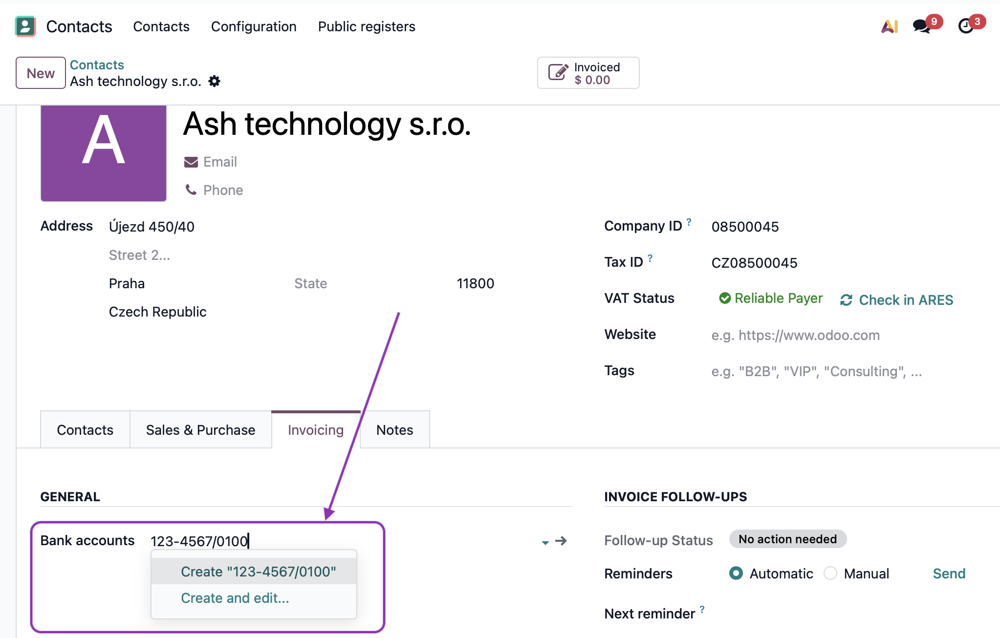
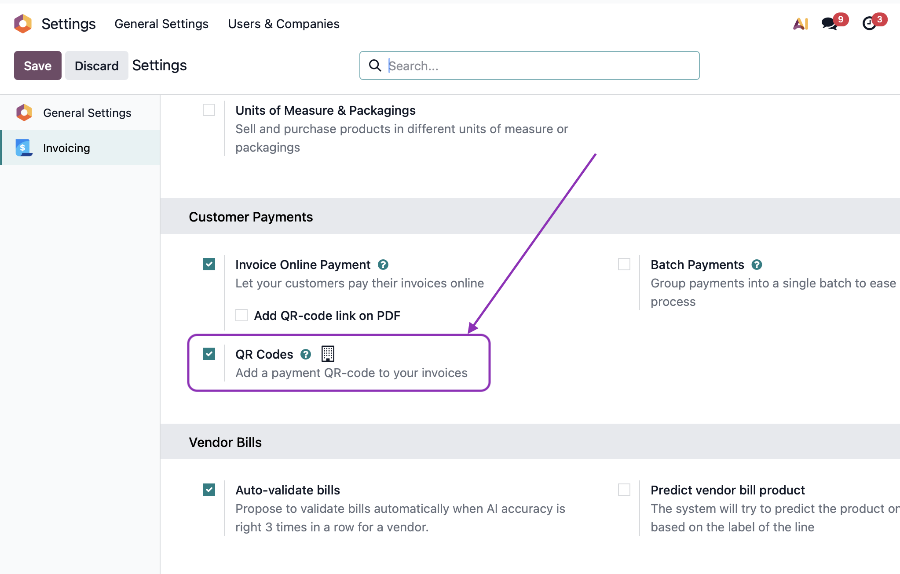

Add Czech-standard QR codes to your invoices for instant mobile payments. Compatible with all major Czech banking apps.
Generate QR codes in the official Czech SPAYD format, fully compatible with:
Your customers can simply scan the code with their banking app and pay instantly.
Enter Czech bank accounts in the familiar local format:
123-456/0800
The module automatically converts them to IBAN when generating the QR code. Foreign accounts can be entered directly as IBAN.

Simply enter your bank account in the standard Odoo field using the Czech format. No additional configuration needed.
The QR code appears automatically on invoices with CZK currency.
Note: For foreign currency invoices, the original Odoo QR code is preserved.
Works with standard Odoo invoice templates. No need to modify your existing reports.
The QR code is generated automatically and placed in the appropriate position on your invoices.

The QR code is not appearing on my invoices
Make sure you have the QR Codes option enabled in your Invoicing app settings (Settings > Invoicing > Customer Invoices > QR Codes).
Which currencies are supported?
Czech SPAYD QR codes are generated for invoices in CZK currency only. For other currencies, the standard Odoo QR code format is used.
This module is developed and maintained by Ash technology s.r.o., an official Odoo partner based in the Czech Republic.
This module is free and open-source. We welcome your feedback and feature requests – if your idea benefits the community, we're happy to include it.
Contact us:
Web: www.ashtechnology.eu
Email: info@ashtechnology.eu
For custom Odoo development or larger projects, feel free to reach out.
Odoo is a trademark of Odoo S.A.